てなわけで短いセブの旅も終わり。
あとは旅の途中で見かけた光景をいくつか。
飯
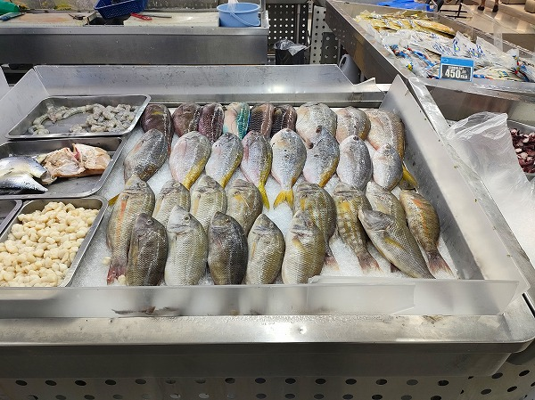
シーフードのレストランに数回行った。
どこも評判のいい名店だったのだが、基本的な味付けが合わなかった。
魚でも海老でも普通に塩焼きでいいところを、ご丁寧に甘いソースみたいなものをかけてくれるのだ。
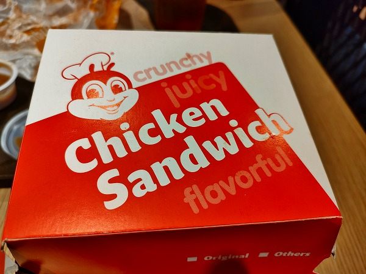
フィリピンのファストフードと言えばジョリビー。
ビビるほど不味い。
ジンベイザメ
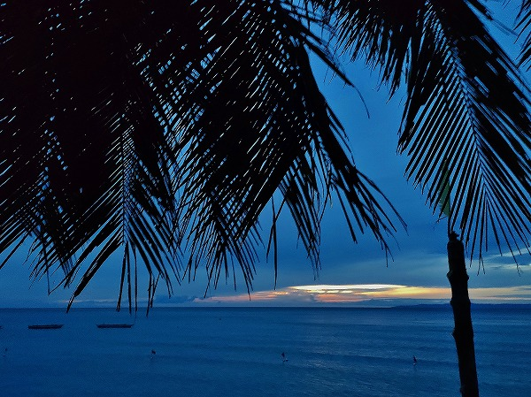
セブ島の観光客がほぼ100％行くというジンベイザメと泳ごうツアーに参加してみた。
夜中の2時半に車にピックアップされ、島の南端のビーチに連れていかれる。
数時間待った後に船に乗り込み海にダイブするといきなり目の前に巨大なジンベイザメ！
それもそのはず、観光客が水に入るとそこに餌をバンバン撒くのである。
絶対に触らないように、と言われていたが、ヤツらの方からゴンゴン当たってくる。
周りはほぼ韓国人の若者グループ。ずーっと自分の撮影ばっかりしている。
日本人以上にSNSガイキチだ。
のりもの
セブシティでは見かけないが郊外に行くと色んな乗り物があって面白い。
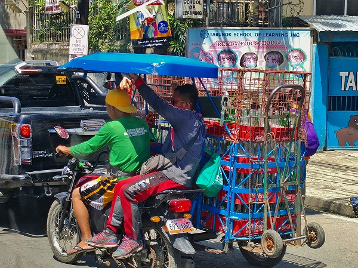
横に荷台を装着して空き瓶を運んでいた。
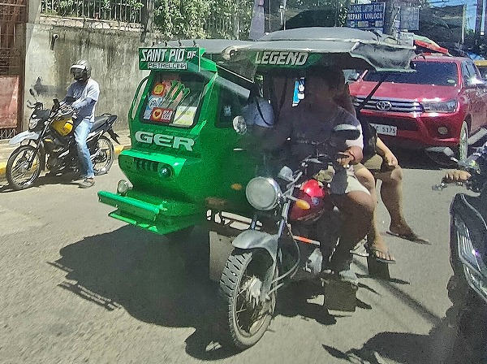
サイドカーのバイタク。
シマラ辺りではこの車両の事を真顔でタクシーと呼んでいた。
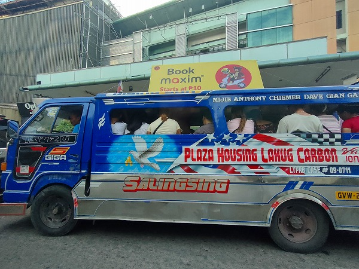
トラックの荷台を改装したバス。
とにかく渋滞が酷かった。
葬式
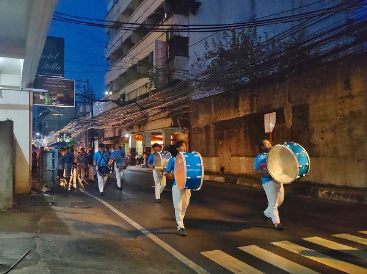
コンビニにビールを買いに行こうと思ったら葬列に遭遇した。
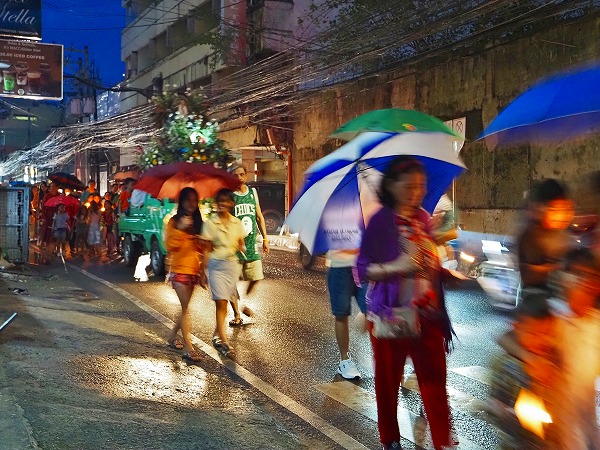
慌てて撮影したが、みんなブレしてた。
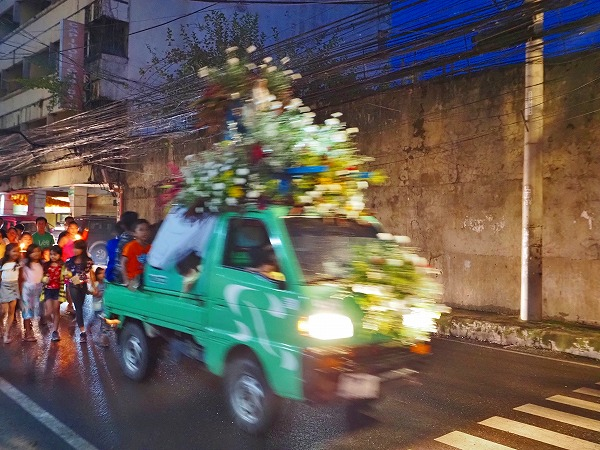
花で飾られたトラック。
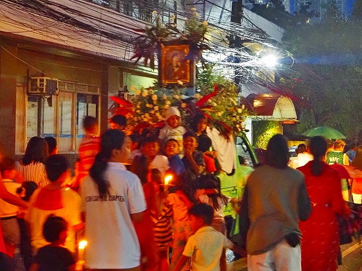
後には故人の遺影と多分棺。
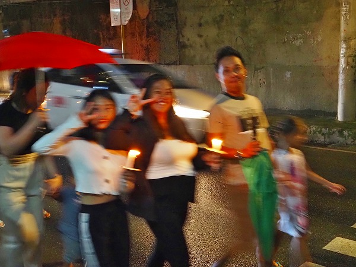
スマホを向けるとみんな楽しそう。
逆に撮って撮って～とせがまれる。
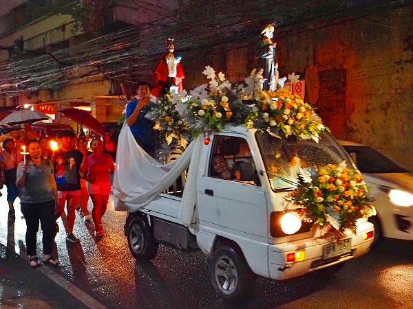
2台目のトラックはお供え物。
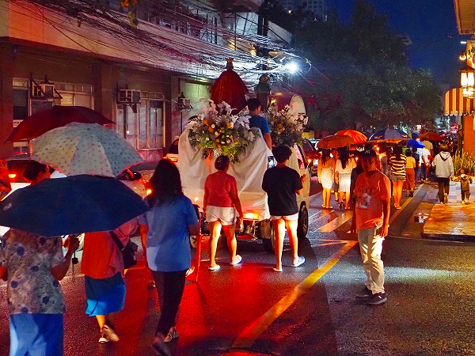
何かみんな楽しそう。
アジアでよく葬列に遭遇するが何故か楽しそうなんだよね。
これもまた死生観の違い、ってやつですかね。
この後、コンビニに向かったら道のど真ん中にステージが組まれていて露天レイブが行われていた。
悪そうなアニキが皿を回して、これまた悪そうな若者が踊り狂っている。
楽しそうだが、小学生のスリ軍団らしきグループや墨だらけの怖そうなチンピラも多かったので遠くから眺めておくに留めておいた。
何しろ曲がダサかったし。
そんな感じでセブの夜は更けていくのであった。